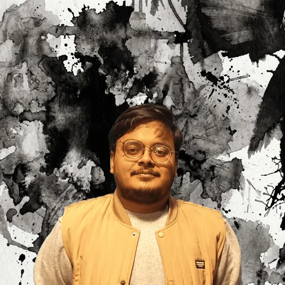

Local AI · Speech · Vision01
PictureBOOK
an offline picture-book maker
Three models take turns on one 8 GB GPU and turn a spoken story into an illustrated PDF in 6 to 9 minutes. Nothing leaves the laptop.

I build and measure ML systems that run on small hardware: local LLMs, RAG that has to quote its sources, and on-device vision and speech.
BS Data Science graduate, KFUEIT 2026 · ML Engineer (contract) at Rezinx since Aug 2025 · Rahim Yar Khan, Pakistan
an offline picture-book maker
Three models take turns on one 8 GB GPU and turn a spoken story into an illustrated PDF in 6 to 9 minutes. Nothing leaves the laptop.
retrieval that has to show its evidence
A RAG library for documents and code where an answer only counts if every quote is found word for word in the chunk it cites.
does a tool-using agent beat plain RAG for a small model?
Retrieval took a 2B model from 3.3% to 33.3% of runs passing every test. Agent tools added nothing detectable.
interview practice from your own documents
Upload a PDF, a local LLM writes the questions, and answers are scored in three stages. Stress detection runs in the browser. My final-year project.
Python, SQL, PyTorch, scikit-learn, XGBoost, Hugging Face Transformers, LoRA and QLoRA fine-tuning, ONNX Runtime, llama.cpp
RAG, hybrid search (BM25 + dense), reranking, embeddings, ChromaDB, NLI, Docling, evaluation (recall@k, MRR, bootstrap confidence intervals)
YOLOv8 / YOLO11, EfficientNet, ByteTrack, OpenCV, TCN, Whisper
FastAPI, REST APIs, SSE, SQLite, Polars, DuckDB, Docker, Grafana, Superlinked, Git, pytest, GitHub Actions, Linux, uv
I like ML work where the interesting part is finding out what actually works. My projects report what failed next to what succeeded, because that is the part another engineer needs.
Education: BS Data Science graduate, Khwaja Fareed University of Engineering and Information Technology (KFUEIT), 2022 – 2026, CGPA 3.35 / 4.00.
Away from a keyboard I read mythology and work through logic puzzles.